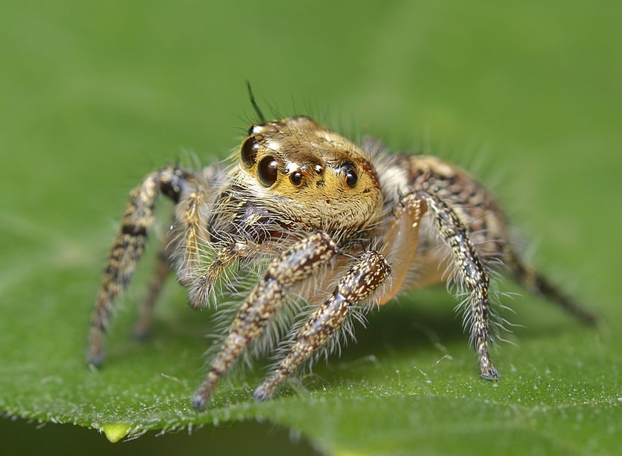

हेवी-बॉडीड जंपर मकड़ीHeavy-bodied Jumper
Hyllus semicupreus · Salticidae · SPD-0027

- Scientific name वैज्ञानिक नाम
- Hyllus semicupreus (C.L. Koch, 1846)
- Family कुल
- Salticidae
- Hindi हिंदी
- हेवी-बॉडीड जंपर मकड़ी
- Local names स्थानीय नाम
- heavy-bodied jumper, heavy bodied jumper, jumper
- Status here यहाँ की स्थिति
- native
- Movement आवागमन
- Resident, here all year
- Known from कहाँ दर्ज
- Others have published records from the wider Awadh–Purvanchal plain, none yet from Basti–Ayodhya अवध–पूर्वांचल से दूसरों के प्रकाशित अभिलेख, बस्ती–अयोध्या से अभी नहीं
- IUCN IUCN
- not evaluated
- Review समीक्षा
- audited and independently read
When to look कब देखें
Present all year. साल भर मौजूद।
Uses and possibilities उपयोग और संभावनाएँ
Drawn from the documented uses in the profile below, where each is labelled traditional, current or a research lead. All uses →
Tell it apart from इनसे अलग पहचानें
हेवी-बॉडीड जंपर मकड़ी / Heavy-bodied Jumper
Hyllus semicupreus (C.L. Koch, 1846) — Salticidae
हेवी-बॉडीड जंपर मकड़ी — बाग-बगीचे की पत्तियों और झाड़ियों पर एक ठोस-शरीर वाली, शक्तिशाली हेवी-बॉडीड जंपर मकड़ी। बड़ी, सामने की ओर मुँह करके देखने वाली आँखें, तीव्र गति, और लचकदार शरीर जो पत्तियों पर तेज़ी से दौड़ता है, रुकता है, और फिर झपटता है। इसका काली-चाँदी का रंग और भारी आकार इसे दीवार के छोटे कूदने वाली मकड़ियों से अलग करता है।
Quick Identification त्वरित पहचान
| Feature | Description | |
|---|---|---|
| Size | 10–14 mm body length; legspan 20–28 mm | |
| Build | Robust, stocky; more heavily built than [[pantropical_jumping_spider | Pantropical Jumping Spider]] |
| Coloration | Dark brown to black with metallic green or copper sheen; silvery or white markings on legs | |
| Eyes | Two large forward-facing principal eyes; body oriented toward observer | |
| Behaviour | Active daylight hunter; hunts on vegetation foliage; jumps 15–20 body-lengths | |
| Habitat | Vegetation and foliage rather than walls |
Field tip: Larger and stockier than wall-jumping spiders; found on plants and foliage rather than building surfaces. The heavy body and metallic colouration distinguish it from Plexippus paykulli. Watch for the deliberate stalk-freeze-pounce hunting sequence.
Morphology आकारिकी
| Feature | Measurement |
|---|---|
| Body length (female) | 11–14 mm |
| Body length (male) | 10–12 mm |
| Legspan | 20–28 mm |
Cephalothorax: Wide, flattened, dark brown to black with fine dense hairs. Prosoma shows iridescent copper or green sheen in certain light angles.
Eyes: Large principal eyes (AME) give stereoscopic colour vision. Secondary eyes (ALE, PME, PLE) provide motion detection and rear field coverage.
Abdomen: Oval, dark with silvery-white or pale patches. Darker than many jumping spider species.
Legs: Robust, banded with dark and pale colours; legs I thick and powerful (used in jumping). Claws and pads adapted for gripping vegetation.
Sexual dimorphism: Males slightly smaller; females more robust.
Ecological Role पारिस्थितिक भूमिका
Visual predator — vegetation specialist: Hyllus semicupreus hunts actively on plant foliage, leaves, and stems. Uses stereoscopic vision to detect and stalk prey. Larger body size compared to Plexippus paykulli allows it to tackle larger prey.
Prey: Flies, small grasshoppers, small moths, ants, beetles, and other arthropods up to its own body size. More capable of handling large prey than smaller jumping spiders.
Ambush and pursuit: Combines ambush (sitting and waiting) with active pursuit; more aggressive hunting style than some Salticidae.
Population control: On suitable vegetation, can significantly reduce small arthropod populations.
Life Cycle / Phenology जीवन चक्र
| Month | Event |
|---|---|
| Apr–May | Spiderlings emerge; early growth |
| May–Jul | Rapid growth; multiple moults |
| Jul–Oct | Adult size; hunting, feeding |
| Sep–Nov | Mating; female lays 1–2 egg sacs (15–20 mm, 20–50 eggs each) |
| Nov–Mar | Overwintering as eggs and juvenile females; low activity |
Predominantly one generation per year with possible partial second generation in optimal conditions.
Agricultural / Human Relevance कृषि प्रासंगिकता
Crop pest control: Natural predator of small flying and crawling insects on crop foliage. In vegetables and fruits, helps control flies, small moths, and beetles.
Garden predator: Beneficial presence in fruit gardens and vegetable plots. Does not damage plants.
Human safety: Harmless; extremely unlikely to bite. No medically significant venom.
Research value: Studied for visual cognition and jumping mechanics — can achieve 50+ times body length jumps.
Expected Locally स्थानीय रूप से अपेक्षित
Not a field record. Written from published accounts for eastern Uttar Pradesh. No confirmed local sighting yet — if you have seen it, that is what the atlas needs.
अभी तक स्थानीय पुष्टि नहीं। यह विवरण प्रकाशित स्रोतों से है, किसी अवलोकन से नहीं।
Hyllus semicupreus is expected on vegetation foliage in gardens, orchards, and field margins March through November. More active in warm months. Searches vegetation by day; can be observed hunting on crop leaves in the early morning when dew is visible on webs of other spiders and plant stems. Egg sacs laid in sheltered locations on vegetation.
Distribution वितरण
Global range: Africa and Asia — widespread across tropical and subtropical regions.
In India: Common across the country in suitable vegetation.
In Uttar Pradesh: Recorded wherever foliage-dwelling jumping spiders occur.
In Basti district / eastern UP: Expected in gardens and agricultural settings; abundance data needed.
Research Questions शोध प्रश्न
- What is the maximum prey size that Hyllus semicupreus can successfully capture?
- क्या Hyllus semicupreus का शिकार करने का तरीका Plexippus paykulli से अलग है? (Does H. semicupreus hunting differ from P. paykulli?)
- How many jumps can this spider make before fatigue, and how does fatigue affect jumping accuracy?
- Do egg sacs laid on different plant substrates (herb, shrub, tree) have different overwintering success rates?
- Can children distinguish Hyllus from other jumping spiders by external appearance and behaviour?
Similar Species मिलती-जुलती प्रजातियाँ
| Species | Difference | |
|---|---|---|
| [[pantropical_jumping_spider | Pantropical Jumping Spider (Plexippus paykulli)]] | Smaller (8–10 mm); bold black-white pattern; found on walls; less robust |
Field rule: Robust, dark, metallic-sheened jumping spider on vegetation foliage, hunting in stalk-freeze-pounce sequence, = Hyllus semicupreus.
Taxonomy & Classification वर्गीकरण
Original description. Described by C.L. Koch in 1846 in Die Arachniden. Type locality: not clearly specified in original publication.
Subspecies. Monotypic.
Family and order placement. Order Araneae, family Salticidae (jumping spiders). Genus Hyllus Schiödte, 1901 contains about 20 species.
IUCN status rationale. Not assessed. Common and stable in suitable habitat.
Photo Gallery फोटो गैलरी
No photos yet — add field photos to media/species/heavy_bodied_jumper/ and run node scripts/sync_photos.js.
Photos wanted:
- Hunting on plant foliage
- Stalking pose
- Close-up showing eye arrangement
- Comparison with Pantropical Jumping Spider for field ID
References संदर्भ
- Koch, C.L. (1846). Die Arachniden. Nürnberg.
- Nentwig, W., Blick, T., Bosmans, R., et al. (2024). Spiders of Europe. www.wsc.nmbe.ch.
- Tikader, B.K. & Biswas, B. (1981). Spider fauna of India. Zoological Survey of India, Calcutta.
- Jackson, R.R. (1992). Eight-legged encounters. Harvard University Press.
- Foelix, R.F. (2011). Biology of Spiders (3rd ed.). Oxford University Press.
- GBIF Occurrence Data — Hyllus semicupreus, Africa and Asia (2000–2024). GBIF taxon key: [to be filled by script].
Source file: species/fauna/spiders/heavy_bodied_jumper.md